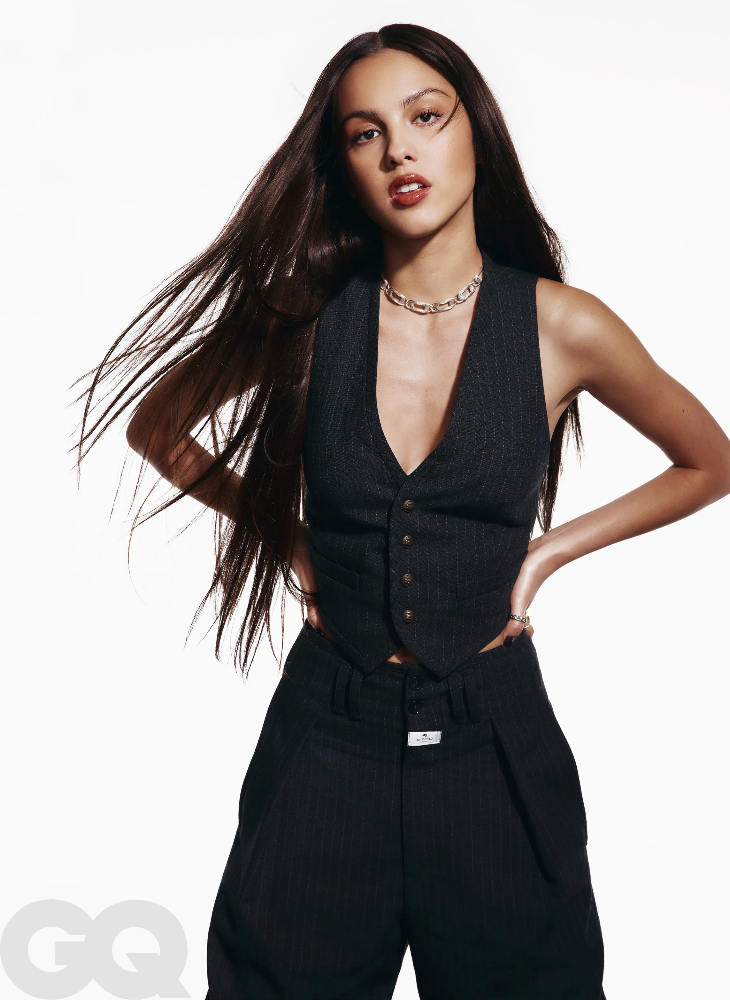

My Favourite Singer
My favourite singer name is Olivia Rodrigo.
Olivia Isabel Rodrigo (born February 20, 2003) is an American singer-songwriter and actress.
In 2010, at age seven, she first appeared onscreen in an Old Navy commercial.
In 2015, at age twelve, Rodrigo made her acting debut portraying
the lead role of Grace Thomas in direct-to-video film An
American Girl: Grace Stirs Up Success.
Drivers License" debuted at number one in the Billboard Hot
100 in the United States, where it stayed for eight consecutive weeks,
and topped the charts in 25 other countries.
Songs list of olivia
- Deja vu
- Tratior
- Happier
- Good 4 u
- Drivers license
- Vampire

Link of Olivia's instagram
olivia's instagram
Link of Olivia's snapchat
Olivia's snapchat
This table shows the event that olivia did in different countries.
| Country |
Date |
| United states |
September , 18, 2021 |
| United States |
December,4, 2021 |
| England |
June,25,2022 |
| Ireland |
June,29,2022 |
Olivia's first song was Drivers License",which was released as her debut
single in January 2021 and experienced commercial success. Nigro produced
all eleven tracks on Rodrigo's debut studio album, Sour (2021), a pop, pop-punk,
alternative-pop, and bedroom-pop album.Drivers License", which was released as her debut single in January 2021
and experienced commercial success. Nigro produced all eleven tracks on Rodrigo's debut studio album,
Sour (2021), a pop, pop-punk, alternative-pop, and bedroom-pop album.
Link of Drivers License
Drivers License
GRID
Olivia tv shows's flex
High school
An American girl
Bizaardvark